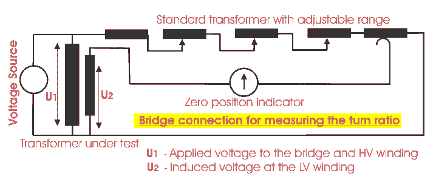

Transformer Ratio Test
The performance of a transformer largely depends upon perfection of specific turns or voltage ratio of transformer. So transformer ration test is an essential type test of transformer. The voltage should be applied only in the high voltage winding in order to avoid unsafe voltage.
Ratio Test of Transformer and Check of Phase Displacement
Actually the no load voltage ratio of transformer is equal to the turn ratio. So ratio test of transformer.
Procedure of Transformer Ratio Test
- First, the tap changer of transformer is kept in the lowest position and LV terminals are kept open.
- Then apply 3-phase 415 V supply on HV terminals. Measure the voltages applied on each phase (Phase-phase) on HV and induced voltages at LV terminals simultaneously.
- After measuring the voltages at HV and LV terminals, the tap changer of transformer should be raised by one position and repeat test.
- Repeat the same for each of the tap position separately.
The above transformer ratio test can also be performed by portable transformer turns ratio (TTR) meter. They have an in built power supply, with the voltages commonly used being very low, such as 8-10 V and 50 Hz. The HV and LV windings of one phase of a transformer are connected to the instrument, and the internal bridge elements are varied to produce a null indication on the detector.
Let's have a discussion on transformer turns ratio (TTR) meter method of turn ratio test of transformer.
A phase voltage is applied to the one of the windings by means of a bridge circuit and the ratio of induced voltage is measured at the bridge. The accuracy of the measuring instrument is < 0.1 %.

This theoretical turn ratio is adjusted on the transformer turn ratio tested or TTR by the adjustable
transformer as shown in the figure above and it should be changed until a balance occurs in the percentage error indicator. The reading on this indicator implies the deviaton of measured turn ratio from expected turn ratio in percentage.
Out-of-tolerance, ratio test of transformer can be due to shorted turns, especially if there is an associated high excitation current. Open turns in HV winding will indicate very low exciting electric current and no output voltage since open turns in HV winding causes no excitation electric current in the winding means no flux hence no induced voltage. But open turn in LV winding causes, low fluctuating LV voltage but normal excitation electric current in HV winding. Hence open turns in LV winding will be indicated by normal levels of exciting current, but very low levels of unstable output voltage. The turn ratio test of transformer also detects high resistance connections in the lead circuitry or high contact resistance in tap changers by higher excitation electric current and a difficulty in balancing the bridge.
 by
by